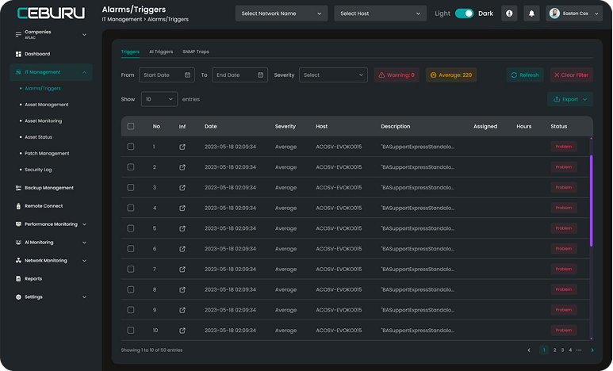

Proactive Monitoring for Optimal IT Performance
In today's fast-paced digital landscape, maintaining the health and performance of your IT infrastructure is crucial. With Ceburu's advanced Alarms and Triggers feature, you gain real-time visibility into potential issues and can proactively address them before they impact your operations. Our intelligent monitoring system continuously scans your network, servers, and applications, generating alerts and triggers based on customizable thresholds and conditions. By promptly identifying anomalies, you can swiftly take action to mitigate risks, optimize performance, and ensure seamless operations.
Streamline and Optimize IT Asset Lifecycle
Efficiently managing your IT assets is vital for maintaining productivity, minimizing downtime, and optimizing resource allocation. Ceburu's comprehensive Asset Management feature empowers you to effortlessly track, monitor, and maintain all your hardware and software assets from a centralized platform. Gain complete visibility into your asset inventory, including details such as specifications, warranties, licensing, and more. Streamline asset procurement, deployment, and retirement processes, ensuring compliance and maximizing return on investment. With automated asset tracking and comprehensive reporting, you can make informed decisions and optimize your IT asset lifecycle.
Real-Time Insights for Proactive Maintenance
Timely identification and resolution of issues affecting your critical assets are essential to avoid disruptions and ensure smooth operations. Ceburu's Asset Monitoring feature provides real-time visibility into the health, performance, and utilization of your IT assets. With customizable dashboards and intuitive visualizations, you can effortlessly monitor key metrics, such as CPU usage, memory utilization, disk space, and network activity. Leverage historical data and trend analysis to identify patterns, anticipate potential problems, and take proactive measures to optimize asset performance and prevent downtime.
Centralized Tracking for Efficient Resource Management
Keeping track of the status and availability of your assets can be a daunting task, especially in complex IT environments. Ceburu's Asset Status feature offers a centralized platform to monitor the availability, utilization, and maintenance status of your assets. Easily view the current status of each asset, including online/offline status, maintenance schedules, and pending tasks. Gain insights into asset utilization patterns and make informed decisions on resource allocation and capacity planning. With real-time updates and automated notifications, you can ensure optimal resource utilization and streamline maintenance activities.
Seamless and Secure Software Updates
Maintaining up-to-date software versions and applying necessary patches is vital for addressing vulnerabilities, improving performance, and ensuring the security of your IT infrastructure. Ceburu's Patch Management feature simplifies the process of managing software updates across your network. Automate patch deployment, schedule updates during maintenance windows, and track the status of patch installations. With comprehensive reporting and compliance monitoring, you can ensure that your systems are protected and in line with industry standards.
Centralized Tracking for Efficient Resource Management
Keeping track of the status and availability of your assets can be a daunting task, especially in complex IT environments. Ceburu's Asset Status feature offers a centralized platform to monitor the availability, utilization, and maintenance status of your assets. Easily view the current status of each asset, including online/offline status, maintenance schedules, and pending tasks. Gain insights into asset utilization patterns and make informed decisions on resource allocation and capacity planning. With real-time updates and automated notifications, you can ensure optimal resource utilization and streamline maintenance activities.